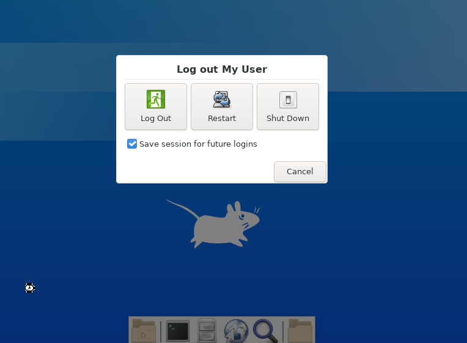

Setting up a single user XFCE environment for FreeBSD
Recently I wanted to install XFCE on an old laptop of mine for someone who was not very familiar with the command line interface. I had previously installed a tiling manager but I think having a desktop environment will be more user friendly. In addition, there will most likely be the only person using the machine so I decided to set it up that way.
This are my notes on how to set up the xfce desktop environment, feel free to install your own desktop environment of choice. This guide will assume that you have just installed FreeBSD with a user which is (at least) added to the operator group. I am also using tcsh as my login shell.
Steps
Install xfce
Enable shutdown option in xfce
Enable autologin to xfce
1. Install xfce
Proceed to install xfce or your desktop environment of choice. Before that, ensure that Xorg is also installed.
2. Enable shutdown option in xfce
By default, after you install xfce and start the xfce, one thing you will notice is that when you click on your name, there is only an option for logout. Shutdown/restart/hibernate seems to be grayed out. To enable the buttons, you will have to do the following.
Make sure myuser is in group operator
Enable dbus in rc.conf
Adding rules in polkit
Make sure myuser is in group operator
Make sure myuser using the desktop environment is in group operator. This can be checked with the following command,
Otherwise if myuser is not in the group, use the following to add it to the group,
Verify it again using the id command.
Enable dbus in rc.conf
D-Bus is installed as part of the xfce package according to the FreeBSD handbook and can be enabled in your rc.conf by adding the following line to your rc.conf.
Adding rules in polkit
Add a new rule to polkit, assuming shutdown.rules does not exist,
Paste the contents below to the file shutdown.rules
# shutdown.rules polkit.addRule(function (action, subject) { if ((action.id == "org.freedesktop.consolekit.system.restart" || action.id == "org.freedesktop.consolekit.system.stop") && subject.isInGroup("operator")) { return polkit.Result.YES; } }); polkit.addRule(function (action, subject) { if (action.id == "org.freedesktop.consolekit.system.suspend" && subject.isInGroup("operator")) { return polkit.Result.YES; } });
Reboot your FreeBSD.
Log into myuser and start xfce.
When clicking log out, the shutdown/restart should be enabled now instead of greyed out.
Next we are going to set up auto login for myuser.
3. Enable autologin to xfce
Firstly we copy startxfce4 script to the user's home .xinitrc.
Next we will edit /etc/gettytab
And add the following into /etc/gettytab
Next we will edit /etc/ttys
And change the following lines into /etc/ttys, from
to the following
When you have completed the above, your FreeBSD should be able to login automatically to myuser after you reboot. You can verify by rebooting,
and when you see myuser logged in automatically, the configuration is correct. Now the final step is to add a .login script to execute automatically whenever we are logged in.
and add the following lines, (note: I am using tcsh as my shell for myuser, change the script accordingly to suit your shell)
Afterwards, you can test if the .login script works by logging out.
This will let it logout and because of the autologin behavior, it should log back into myuser and run the .login script. If the all else succeed, you will be able to see a xfce environment with shutdown/restart/suspend buttons working.
Here are a list of resources that I got my scripts and configurations from
FreeBSD Handbook
FreeBSD Forums